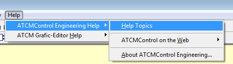
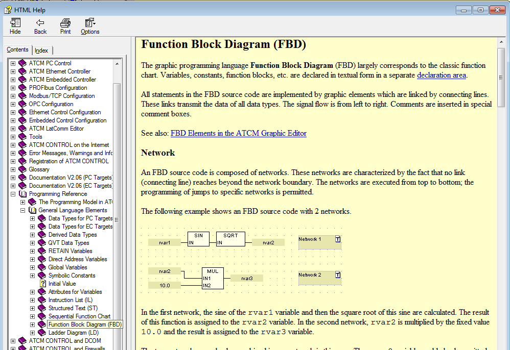

For details about ATCMcontrol FBD language there in an online help.
To open help in the menu select: Help → ATCMControl Engeineering Help → Help Topics

In the window select “Index” and write “FBD”
